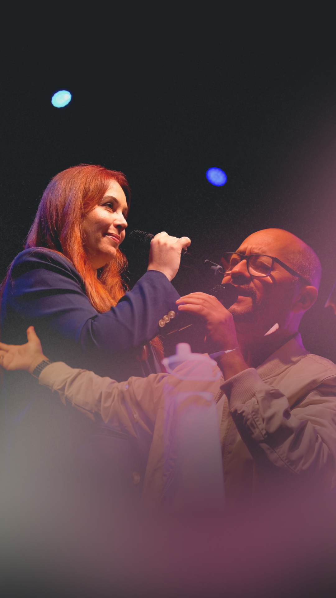
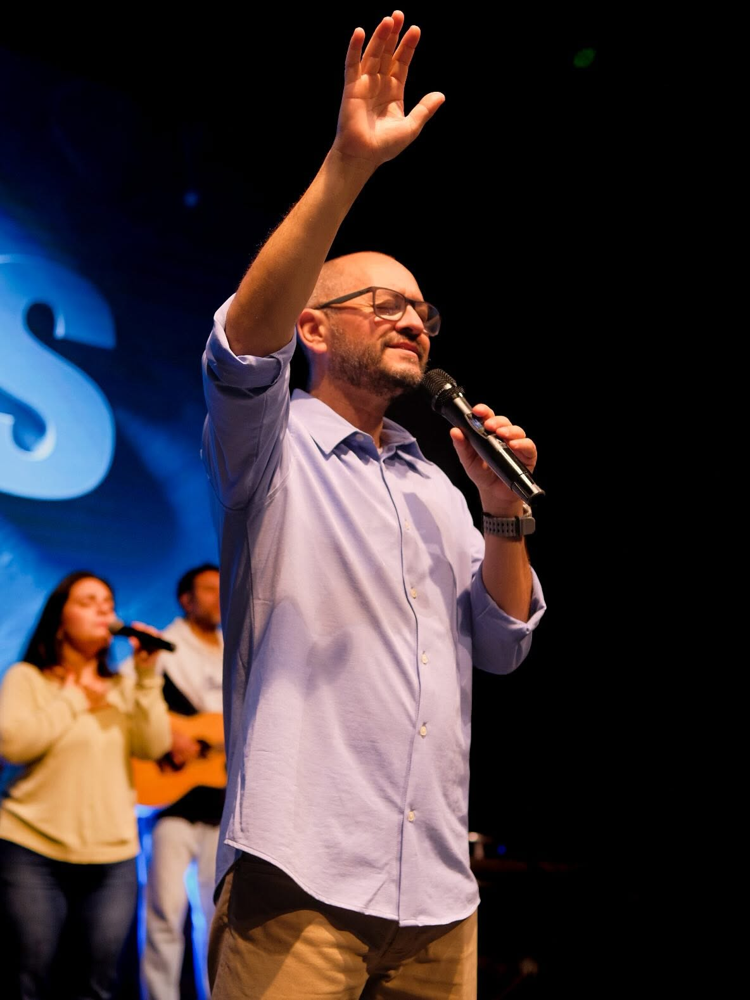
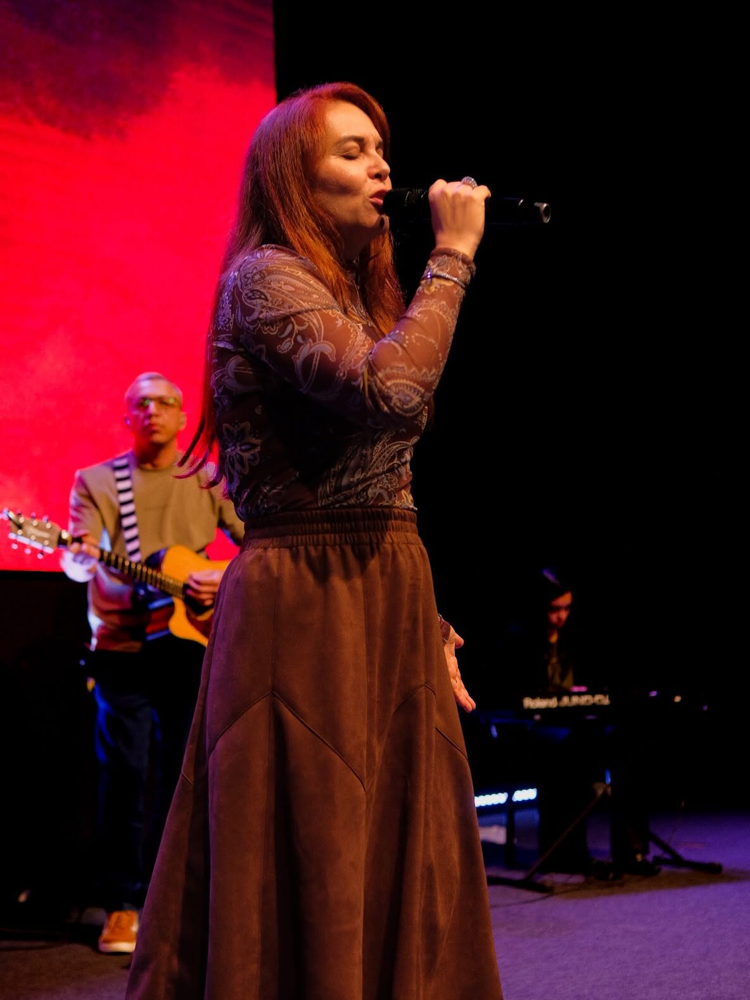

Somos a Igreja Batista +500, uma comunidade cristã comprometida com o ensino bíblico, o discipulado e o amor ao próximo. Nossa missão é ver vidas transformadas pelo evangelho de Jesus Cristo.
Com uma história de fé e crescimento, seguimos firmes no propósito de alcançar mais pessoas com a mensagem de esperança que só Cristo pode oferecer.
Venha nos visitarCremos na morte e ressurreição de Jesus como fundamento da nossa salvação.
O sacrifício de Cristo nos move a amar a Deus e ao próximo com todo o coração.
Através do batismo e da palavra, somos renovados e chamados a uma vida plena.
Servos de Deus comprometidos com a palavra, com a família e com cada membro desta comunidade.

Líder comprometido com o ensino bíblico e o crescimento espiritual da igreja. Apaixonado por discipulado e por ver vidas transformadas pelo poder do evangelho.

Dedicada ao ministério de mulheres, casais e família. Seu coração é servir com amor e acolher cada pessoa que chega à igreja com a graça e a ternura de Cristo.
Adoração, pregação da palavra e comunhão. Toda a família é bem-vinda.
Um momento especial de oração, intercessão e aprofundamento na palavra.
Comunhão em pequenos grupos espalhados pela cidade. Encontre um grupo perto de você.
Um fim de semana de renovação espiritual, comunhão e muito louvor.
Chácara da Família · 15–17 de JunhoTarde de encorajamento, palavra e adoração para todas as mulheres da igreja.
Templo Central · 14h00Celebre conosco esse passo de fé de novos membros da nossa família.
Templo Central · Culto da manhãCada dízimo e oferta é um ato de fé que move o Reino de Deus. Sua contribuição sustenta ministérios, missões e o cuidado às famílias da nossa comunidade.
"Cada um contribua conforme determinou em seu coração, não com relutância ou por obrigação, pois Deus ama quem dá com alegria."
2 Coríntios 9:7
contato@igrejamais500.com.br
Substitua por seu QR Code Pix real
Rua dos Passos, 185
Taubaté — SP
(11) 99999-9999
contato@igrejamais500.com.br
Seg–Sex: 8h–18h
Dom: Cultos às 9h, 11h e 18h